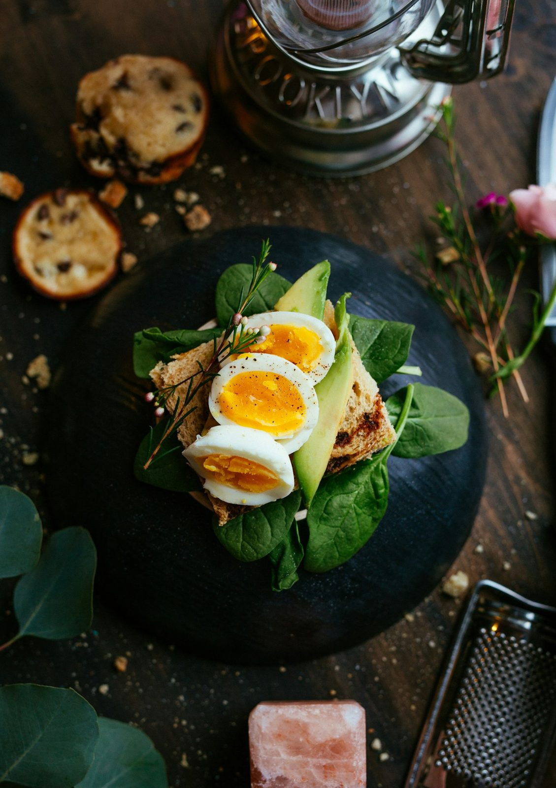

Cikk · Fehérje
Fehérje: izomépítés ételből, a por csak kiegészítés
A fehérje építi és javítja az izmot. A sportoló a NIH szerint többnyire ételből is fedezheti a szükségletet.

Mi a készítmény vagy a téma?
A fehérje építi, fenntartja és javítja az izmokat. Javítja a szervezet válaszát az edzésre, és rövidítheti a regenerációt. Aminosavakból áll. Az esszenciális aminosavakat ételből kell megszerezni. Az állati ételek mindet tartalmazzák. A növényi ételek különbözőeket, ezért a változatosság számít. A legtöbb fehérjepor tejsavó, amely mindet tartalmazza.
Kinek szól?
Sportolónak és edző embernek szól a NIH edzéslapja. Aki eleget eszik, annak a por nem kötelező. Rövid időre, nagyon intenzív edzésnél vagy versenysúly felé csökkentett étkezésnél több kellhet.
Mit mond a kutatás?
Az elegendő fehérje adja az izomfehérjékhez szükséges esszenciális aminosavakat, és csökkenti az izomfehérje lebontását. A NIH szerint a sportolónak naponta testtömeg-fontonként körülbelül 0,5–0,9 gramm kell, egy 150 fontos embernél ez körülbelül 75–135 gramm. A sok fehérje meglehetősen biztonságosnak tűnik, de a javasolt fölött nincs további haszon. A sporttudomány szerint 3–5 óránként testtömeg-fontonként körülbelül 0,14 gramm jó minőségű fehérje, alvás előtt és edzés után két órán belül is. Ezek amerikai edzéslap-számok, nem magyar rendelvény.
Jól alátámasztott A fehérje építi és javítja az izmot, és adja az esszenciális aminosavakat. A változatos növényi étrend is összeállítható úgy, hogy mind meglegyen. Forrás: https://ods.od.nih.gov/factsheets/ExerciseAndAthleticPerformance-Consumer/
Korlátozott A sportolói szükséglet magasabb lehet az átlagos étkezésnél, de a NIH szerint a javasolt fölött további haszon nincs, és a por nem kötelező, ha az étel elég. Forrás: https://ods.od.nih.gov/factsheets/ExerciseAndAthleticPerformance-Consumer/
Mit nem állítunk
Nem állítjuk, hogy a fehérjepor több izmot épít, mint az elegendő étel.
Nem számolunk egyéni grammot.
A vesebeteg fehérjebevitele orvosi kérdés.
Források
- NIH ODS. Exercise and athletic performance, Consumer. Fehérje. https://ods.od.nih.gov/factsheets/ExerciseAndAthleticPerformance-Consumer/